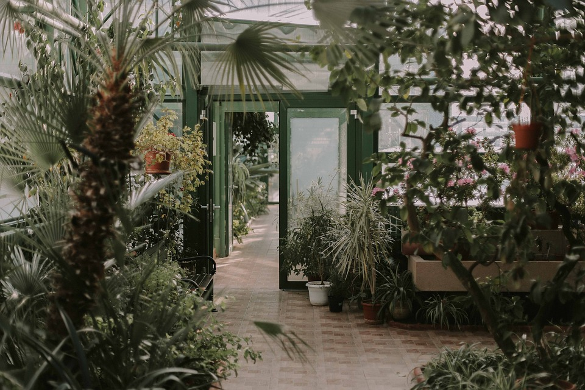
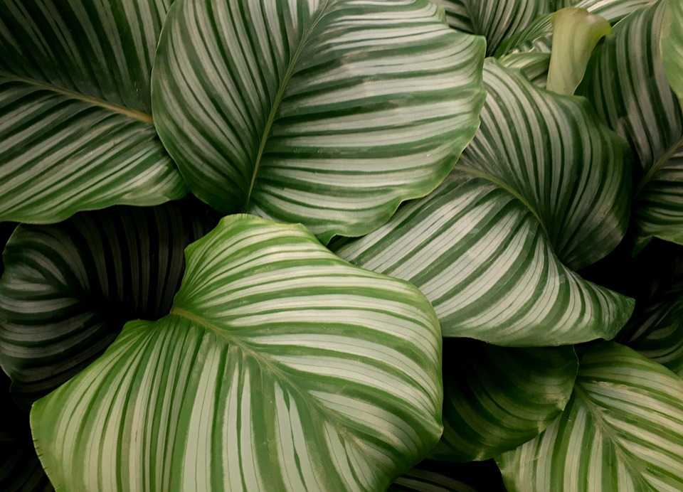
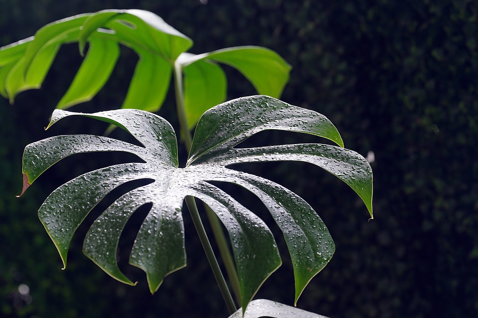
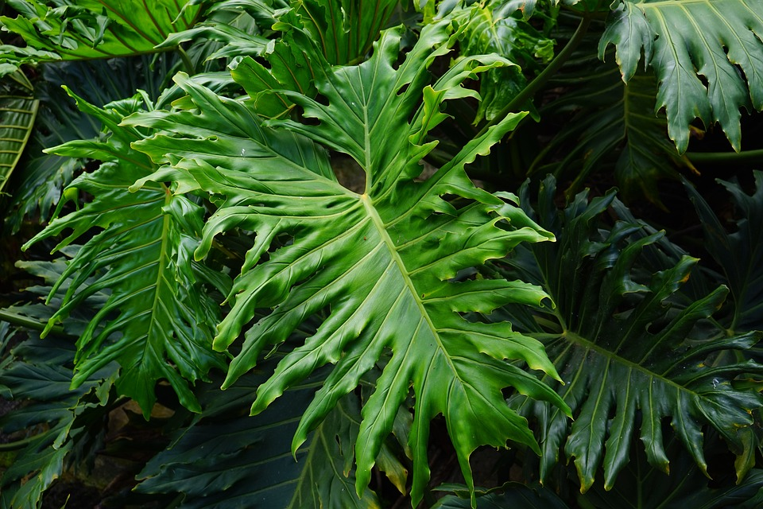
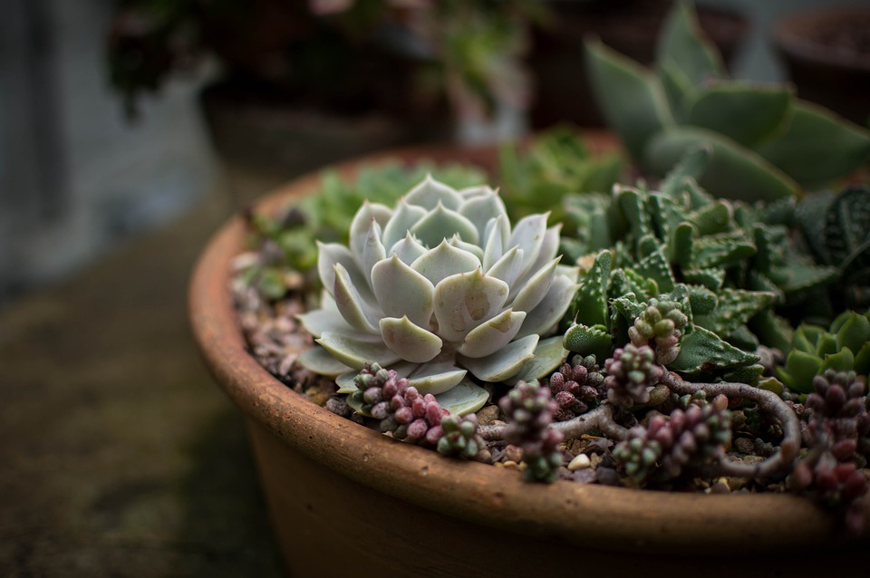

This website has some subtext that goes here under the main title. It's a smaller font and the color is lower contrast.

Some plants from our nursery.

Calatheas are from the family of plants known as Marantaceae. These are a species of flowering plants from tropical areas such as Africa.

Monstera is a climbing, evergreen perennial vine. It is a part of the philodendrom family, and has gained notority from its large perforated leaves. Monstera can be found in tropical jungle climates.

Philodendron is a large family of common house plants. They come in a variety of colors, shapes and sizes.

Succulents are any plant with a thick fleshy tissue that is used for water storage. They like to grow in temperate climates making it a great low maintenence houseplant.
Plants give us oxygen for the lungs and for the soul.
-Terri Guillements
Never miss a sale!
Sign up for our newsletter now by clicking the button.